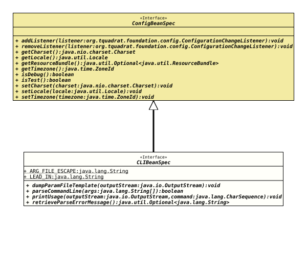

Interface CLIBeanSpec
- All Superinterfaces:
ConfigBeanSpec
When a configuration bean should be initialised from the command line, the respective specification interface needs to extend this interface.
If none of the getters in the extended interface is annotated with
either
@Option
or
@Argument,
the compilation failed because the generated class does not implement the
methods from this interface
(dumpParamFileTemplate(OutputStream),
parseCommandLine(String[]),
printUsage(OutputStream, CharSequence)
and
retrieveParseErrorMessage()). The error message will be something
like "<Generated Class> is not abstract".
- Author:
- Thomas Thrien (thomas.thrien@tquadrat.org)
- Version:
- $Id: CLIBeanSpec.java 1164 2026-03-20 17:38:18Z tquadrat $
- Since:
- 0.0.1
- UML Diagram
-

UML Diagram for "org.tquadrat.foundation.config.CLIBeanSpec"
{kind=link}
-
Field Summary
Fields -
Method Summary
Modifier and TypeMethodDescriptionvoiddumpParamFileTemplate(OutputStream outputStream) Dumps a parameter file template to the givenOutputStream.booleanparseCommandLine(String[] args) Parses the command line.voidprintUsage(OutputStream outputStream, CharSequence command) Prints a usage message to the givenOutputStream.Retrieves the message for the error caused by the last call toparseCommandLine(String[]), given that this returnfalse.Methods inherited from interface ConfigBeanSpec
addListener, getCharset, getLocale, getResourceBundle, getTimezone, isDebug, isTest, removeListener, setCharset, setLocale, setTimezone
-
Field Details
-
ARG_FILE_ESCAPE
-
LEAD_IN
-
-
Method Details
-
dumpParamFileTemplate
Dumps a parameter file template to the givenOutputStream.- Parameters:
outputStream- The target output stream.- Throws:
IOException- Something went wrong when writing to the output stream.- See Also:
-
parseCommandLine
Parses the command line.
As a result from parsing the given command line arguments, the accordingly annotated properties will be initialised with the values from the command line.
Arguments starting with
@(like@param.lst) are treated as a file that contains further arguments.Assuming the file
param.lsthas the following contents:-opt0 value0 -opt1 value1 -- arg0 arg1and
argslooks like this:
,-opt value @param.lst argthe resulting command line arguments set would be:
-opt value -opt0 value0 -opt1 value1 -- arg0 arg1 argIn case the file could not be opened for whatever reason, the parameter will not be replaced – meaning the resulting command line would have the value
@param.lstas one value.- Parameters:
args- The command line arguments; usually the same as the arguments to the methodmain().- Returns:
trueif the command line could be parsed without issues,falseotherwise.
-
printUsage
Prints a usage message to the givenOutputStream.- Parameters:
outputStream- The output stream.command- The command used to start the program.- Throws:
IOException- A problem occurred on writing to the output stream.
-
retrieveParseErrorMessage
Retrieves the message for the error caused by the last call toparseCommandLine(String[]), given that this returnfalse.- Returns:
- An instance of
Optionalthat holds the error message.
-